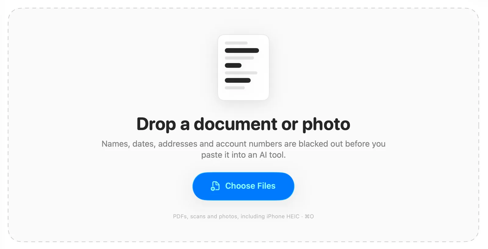
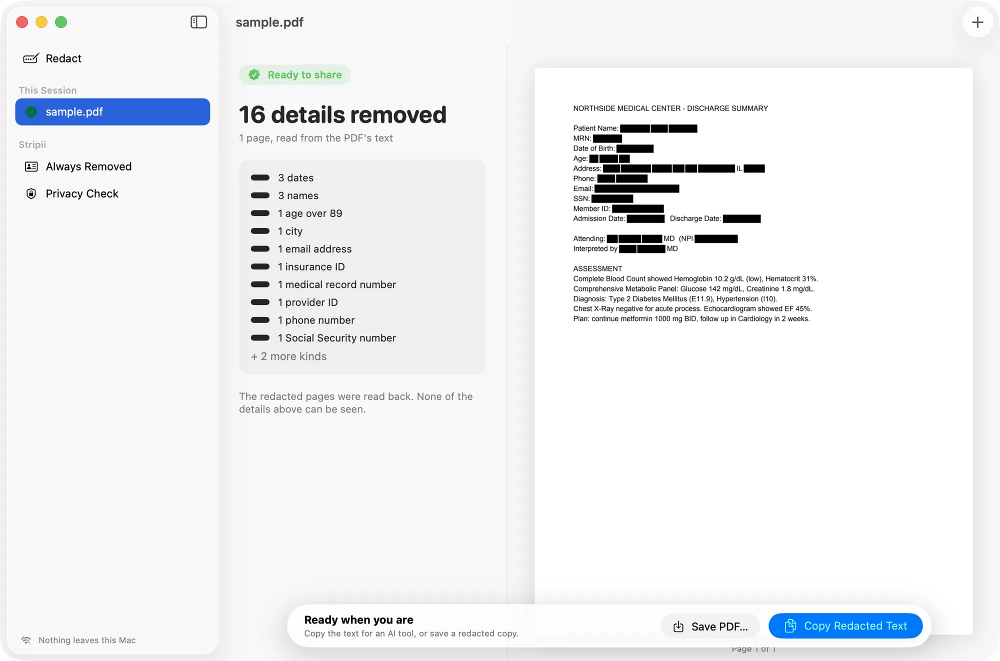
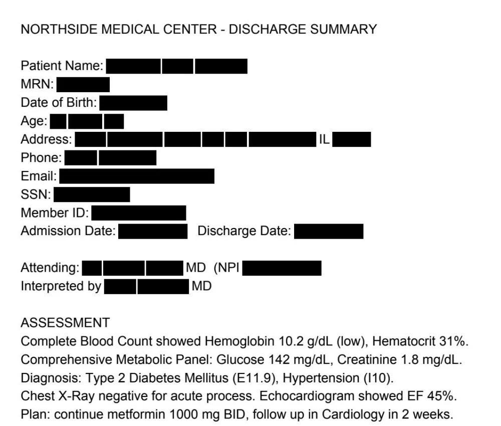
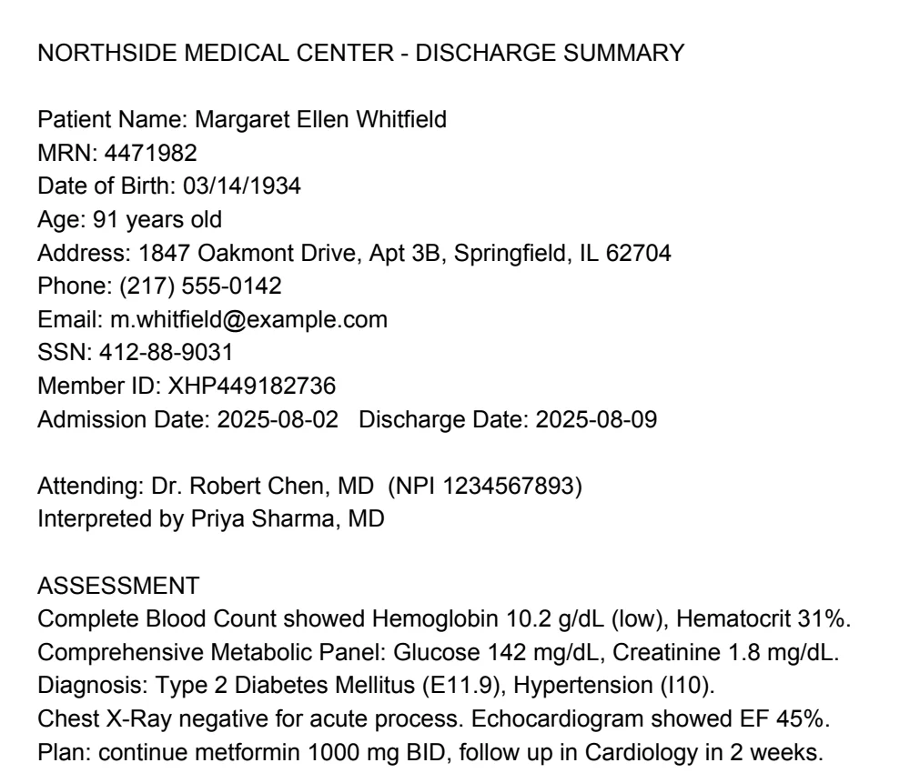
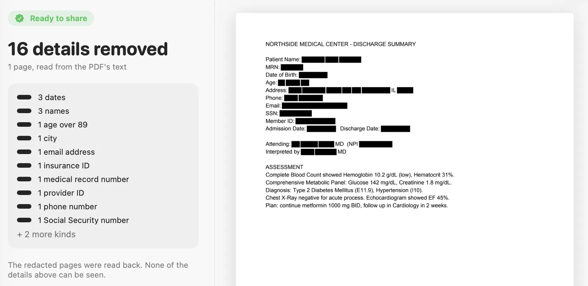
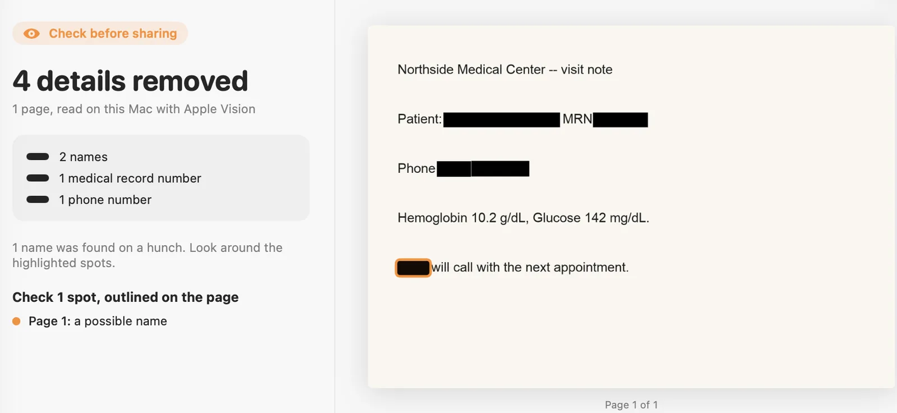
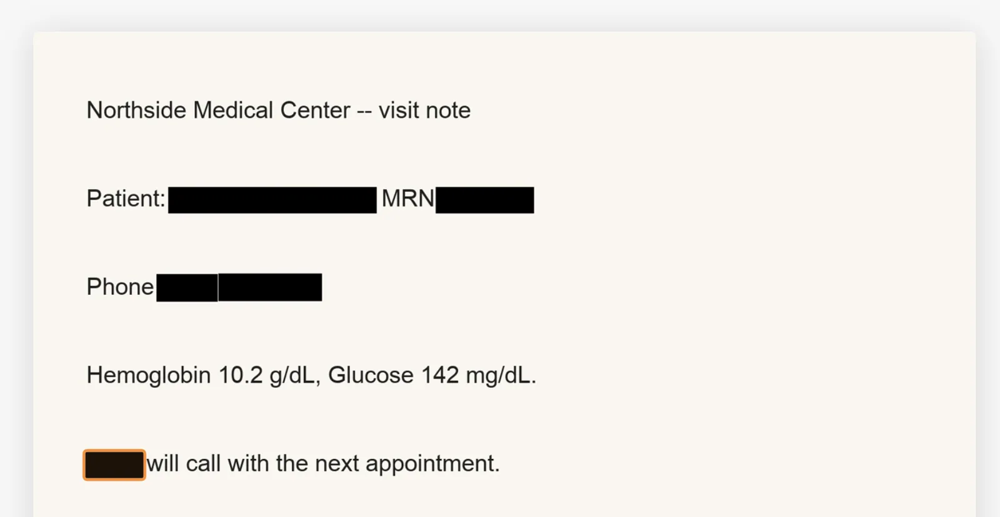
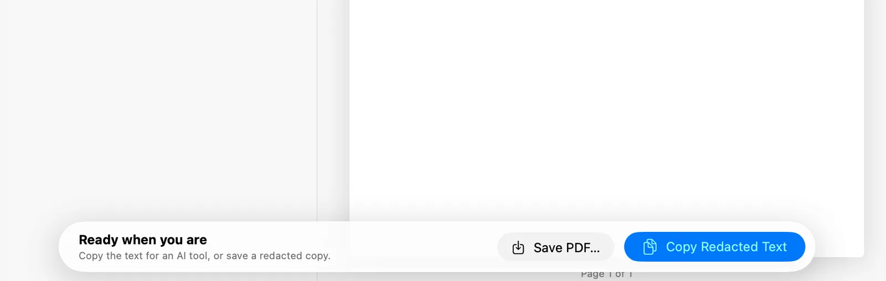
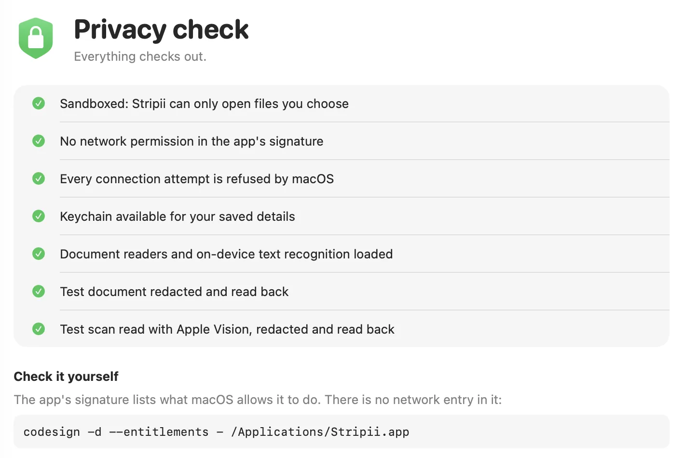

01
Drop it in
PDFs, scans and photos, including iPhone HEIC. Text comes from the PDF where it has some, and from Apple's on-device Vision where it does not.
Free for Mac · Works with the internet off
Drop in a lab report, a bank statement or a photo of a prescription. Stripii blacks out who it is about, then reads its own work back to prove nothing is left.
v0.3.0 · macOS 14+ · Apple silicon · 38 MB · Not notarised by Apple
Before you download
I do not have an Apple Developer account, and this is free, so the app is not notarised. macOS will tell you it cannot verify it. That warning is accurate and you should read it.
Open the .dmg and drag Stripii to Applications.
Open Stripii once. macOS says it can't be verified. Click Done.
System Settings, then Privacy and Security. Scroll down, click Open Anyway next to Stripii, and confirm.
Or in Terminal
xattr -dr com.apple.quarantine /Applications/Stripii.appCheck the download
shasum -a 256 Stripii-0.3.0.dmg
0fbbc4954c1db495b0f3ae6f7f1017f3f27fae66f720e6485d1bafa5ecc49fdeAfter an update, macOS asks once whether Stripii may use its Keychain item. Choose Always Allow.
This is the whole app

You want an AI to explain your blood test. It does not need your name, your date of birth, your address and your insurance number to do it.


Before After16 identifiers gone. Names, dates, record and member numbers, address, phone, email, Social Security number.
The medicine stays. Lab values, diagnosis codes and the plan are left alone, because that is what you want the AI to read.
Burned in, not covered. The page is redrawn as a flat image. There is no text underneath to copy out, and no metadata.

01
PDFs, scans and photos, including iPhone HEIC. Text comes from the PDF where it has some, and from Apple's on-device Vision where it does not.

02
Every page is redrawn with black boxes burned into the image. Annotations, form fields and metadata go. Photos lose their EXIF, GPS and XMP data.

03
Stripii runs text recognition over the finished page and checks it again. Ready means nothing legible was left. Anything uncertain is outlined, and anything still readable is held instead of handed over.
In this synthetic photo one name was caught by a guess rather than a rule, so the file is marked for checking.

04
Click an outlined spot, or drag over anything else. The page is read back again before it is released.

05
The clipboard copy stays on this Mac. Saved files get a plain name instead of the original, and you are warned before saving into a cloud folder.
Notarisation would tell you Apple scanned the app. It would not tell you what the app is allowed to do. One command will:
% codesign -d --entitlements - /Applications/Stripii.app
[Key] com.apple.security.app-sandbox
[Value]
[Bool] true
[Key] com.apple.security.files.user-selected.read-write
[Value]
[Bool] trueThat is the whole list: open the files you choose, and nothing else. There is no network entitlement, so macOS refuses every connection the app or its helper tries to make. Tested inside the built app for DNS, TCP, HTTPS and a localhost listener.

14
The worst: images inside ordinary text-layer PDFs were not being redacted at all, and the document was still graded ready to share. A scan pasted into a Word file went through untouched while the tool said it was safe.
The fix is the read-back. Those pages now go through text recognition and every detector runs again on the output. CI runs pip-audit on every change.
0.927
I am not going to round it up. Names in running prose without a label can slip through, and so can a description that identifies somebody without naming them.
Save your own names and numbers once and they are removed from every file after that. That closes most of the gap for your documents, and none of it for anybody else's.
Mrs. [[PERSON_1]] returned today accompanied by her daughter [[PERSON_2]], who drives
her in from Brookfield each month. She mentioned that her late husband [[PERSON_3]]
had the same condition. Her granddaughter, who teaches at Brookfield High,
called our office twice last week from [[PHONE_1]].
We reviewed her results with Kowalczyk from the lab. Fasting glucose 142.
She lives alone at the Cedarbrook Apartments on Route 9 and is worried about
the co-pay on her Anthem plan, member number [[HEALTH_PLAN_ID_1]].De-identification is not compliance. The health profile implements the HIPAA Safe Harbor identifier list, which is a method, not a certification.
Open source engine
A Python library and command line tool, MIT licensed. PDFs, images, text, CSV and JSON. It can put the original values back into a model's reply, and run as a local proxy. Not on PyPI yet.
View on GitHub% pipx install "git+https://github.com/nikhilrdeshpande/stripii@v0.3.0"
% stripii scrub sample.pdf -o redacted.pdf --profile health
wrote redacted.pdf (1 page(s), read with text layer, redaction drawn on the image)
grade: ready (16 value(s) read back)
sample.pdf: 16 replacement(s)A website would need your document on a server, which is the entire thing this is trying to avoid.
The next option was a local web interface, and that failed for a reason worth recording: WebKit will not render inside a sandbox with no network access. The offline promise chose the technology.
Because it is not notarised. That needs a paid Apple Developer account and this app is free. The warning means Apple has not scanned it, nothing more. The checksum and the codesign command are how you check it instead.
No. There is a build for Apple silicon Macs only.
Nothing. No account, no sign-up, no paid tier.
The engine and the command line tool are, under MIT, and the app runs that same engine. The Mac app's own source is closed for now.
Nothing. No cookies, no analytics, no scripts, and nothing loaded from anyone else's server. The web server keeps no access log for it. Requests pass through Cloudflare on the way. The page's source and server configuration are in the repository.
Free · macOS 14+ · Apple silicon · Not notarised